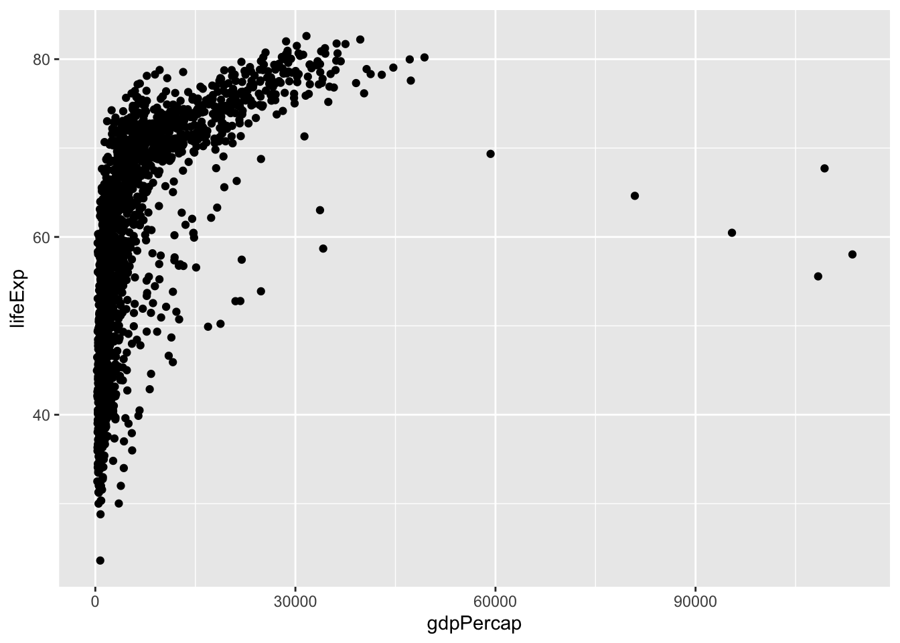

Coding Practice
The following material will be posted on Github via the Discussion board for the class Team (2019 is the Hippogriffs). Assignments are designed to reinforce the code/lessons covered that week, and provide students a chance to both practice coding and reviewing code. Assignments were completed via private repositories each student set up (via Github Classrooms), and each week students will be randomly assigned another student for a code review. Apologies if there are links that don’t work, they may be specifically setup for students enrolled in course.
Assignments
Week2
Week3
Week4
Week 4 Assignment
For you assignment this week, we will be practicing subsetting the same data frame we were working with in class, surveys.
The objective of the assignment is for you to write a new, clean script, commit and push it to github, and then someone else will download and run that script on their computer, and file an issue in your repository with some comments about the script.
Part I: Coding Practice
Create a new script in your
r-davis-in-class-yournameproject namedweek_4_assignment_ABC.Rbut with your initials in place of ABC. Save it to yourscriptsfolder.Read
portal_data_joined.csvinto R using theread.csvcommand and create a dataframe namedsurveys(just like we did in class).Subset to just the first column and columns five through 8. Include only the first 400 rows. Save this as a dataframe called
surveys_subset.CHALLENGE: Select all rows that have a
hindfoot_lengthgreater than 32, save these in a new data.frame namedsurveys_long_feet, then plot itshindfoot_lengthvalues as a histogram using thehistfunction.Change the column
hindfoot_lengthsinto a character vector.Plot the
hindfoot_lengthsin a histogram (if this doesn’t work, just leave it, and think about it during Part II of the assignment, wink wink).Commit & Push the R script to GitHub - check your repository on GitHub and make sure your script is there.
Part II: Code Review
Find your code partner’s repository on GitHub, click on the scripts folder, and find the script named w3_assignment_ABC.R
Click on the script, then find the RAW button on the right hand side of the screen. Click on RAW.
You should see a plain text version of the script. Right click anywhere on the page, and select “Save As”, save the script to your scripts folder in your repository. Make sure to change the file extension to .R (instead of .txt).
Now, if you open up your RProject where you saved the script, you should see it, and better yet, you should have the same path/folder structure that is used in the script (we hope!).
Try to run the script line by line. Where does it break? Can you fix it? File an Issue in your code partner’s repository. Write up a few sentences describing a few good things about the script (what worked! Was it clearly commented?) and what didn’t (where did it break for you, and why? How might it be fixed?). Remember to be constructive and positive…we’re all learning!
Any questions? comments? Issues? Remember you can always tag us using individual names when you file an issue in the Discussion repository: @marthawohlfeil, @mcmaurer @ryanpeek, etc.
Thanks!
Week5
WEEK 5 ASSIGNMENT
Alright folks, we’ve ventured into the tidyverse! We’re going to test out your dplyr skills, pipe (%>%) some data, and make a tibble or two.
Part I: Enter the Tidyverse
Create a new script in your
r-davis-in-class-yournameproject, and name itw_5_assignment_ABC.R, with your initials in place ofABC. Save it in yourscriptsfolder.Read
portal_data_joined.csvinto R using thetidyverse’s command calledread_csv(), and assign it to an object namedsurveys.Using
tidyversefunctions and pipes, subset to keep all the rows where weight is between 30 and 60, then print the first few (maybe… 6?) rows of the resulting tibble.Make a tibble that shows the
max(hint hint) weight for each species+sex combination, and name itbiggest_critters. Use thearrangefunction to look at the biggest and smallest critters in the tibble (use?, tab-complete, or Google if you need help witharrange).Try to figure out where the
NAweights are concentrated in the data- is there a particular species, taxa, plot, or whatever, where there are lots ofNAvalues? There isn’t necessarily a right or wrong answer here, but manipulatesurveysa few different ways to explore this. Maybe usetallyandarrangehere.Take surveys, remove the rows where weight is
NAand add a column that contains the average weight of each species+sex combination. Then get rid of all the columns except for species, sex, weight, and your new average weight column. Save this tibble assurveys_avg_weight. The resulting tibble should have 32,283 rows.Challenge: Take
surveys_avg_weightand add a new column calledabove_averagethat contains logical values stating whether or not a row’s weight is above average for its species+sex combination (recall the new column we made for this tibble).Extra Challenge: Figure out what the
scalefunction does, and add a column tosurveysthat has the scaled weight, by species. Then sort by this column and look at the relative biggest and smallest individuals. Do any of them stand out as particularly big or small?
Part II: Code Review
Find your code partner’s repository on GitHub, click on the scripts folder, and find the script named w5_assignment_ABC.R
Click on the script, then find the RAW button on the right hand side of the screen. Click on RAW.
You should see a plain text version of the script. Right click anywhere on the page, and select “Save As”, save the script to your scripts folder in your repository. Make sure to change the file extension to .R (instead of .txt).
If you can’t save your partner’s file in this way, you can copy the text from the RAW view, then create a new .R file in your RProject, and paste the text there.
Now, if you open up your RProject where you saved the script, you should see it, and better yet, you should have the same path/folder structure that is used in the script (we hope!).
Try to run your partner’s script, stepping through each question, and compare your methods and answers to theirs. Did they use the same steps in the same order? Do their answers look like yours? If not, try to figure out why!
Any questions? comments? Issues? Remember you can always tag us using individual names when you file an issue in the Discussion repository: @marthawohlfeil, @mcmaurer @ryanpeek, etc.
Thanks!
Week6
This week’s assignment builds on the ggplot skills that we learned during Week 06. Just like last week, there are two parts: the exercsise and a code review. Please pick a partner for the code review as you have been doing in past weeks. If you do not have a partner, please email Martha at mwohlfeil@ucdavis.edu.
Part 1
This exercise asks you to modify existing code to complete a new task.
We will work in the same repository that you’ve been working in for the last couple of weeks: r-davis-in-class-YourName.
For this homework, we are going to be working with a new dataset called gapminder. Download the data using the code below. Remember, this code is looking for a folder called data to put the .csv in, so make sure you have a folder named data, or modify the code to the correct folder name.
library(tidyverse)## ── Attaching packages ─────────────────────────────────────────────────────────────────────── tidyverse 1.2.1 ──## ✔ ggplot2 3.1.0.9000 ✔ purrr 0.3.0
## ✔ tibble 2.0.1 ✔ dplyr 0.8.0.1
## ✔ tidyr 0.8.2 ✔ stringr 1.4.0
## ✔ readr 1.3.1 ✔ forcats 0.3.0## ── Conflicts ────────────────────────────────────────────────────────────────────────── tidyverse_conflicts() ──
## ✖ dplyr::filter() masks stats::filter()
## ✖ dplyr::lag() masks stats::lag()gapminder <- read_csv("https://gge-ucd.github.io/R-DAVIS/data/gapminder.csv")## Parsed with column specification:
## cols(
## country = col_character(),
## year = col_double(),
## pop = col_double(),
## continent = col_character(),
## lifeExp = col_double(),
## gdpPercap = col_double()
## )1A.
Modify the following code to make a figure that shows how life expectancy has changed over time:
ggplot(gapminder, aes(x = gdpPercap, y = lifeExp)) +
geom_point()
1B.
Look at the following code. What do you think the scale_x_log10() line is doing? What do you think the geom_smooth() line is doing?
Hint: There’s no cost to tinkering! Try some code out and see what happens with or without particular elements.
ggplot(gapminder, aes(x = gdpPercap, y = lifeExp)) +
geom_point(aes(color = continent), size = .25) +
scale_x_log10() +
geom_smooth(method = 'lm', color = 'black', linetype = 'dashed') +
theme_bw()
1C. (Challenge!)
Modify the above code to size the points in proportion to the population of the county. Hint: Are you translating data to a visual feature of the plot?
Save this code in your scripts folder and name is w6_assignment_ABC.R with your initials.
Part II: Code Review
- Find your code partner’s repository on github, click on the scripts folder, and find the script named:
w6_assignment_ABC.R - Click on the script, then find the
RAWbutton on the right hand side of the screen. Click onRAW. - You should see a plain text version of the script. Right click anywhere on the page, and select “Save As”, save the script to your
scriptsfolder in your repository. Make sure to change the file extension to.R(instead of.txt). - Now, if you open up your RProject where you saved the script, you should see it, and better yet, you should have the same path/folder structure that is used in the script (we hope!).
- Try to run the script line by line. Where does it break? Can you fix it?
- File an Issue in your code partner’s repository. Write up a few sentences describing a few good things about the script (what worked! Was it clearly commented?) and what didn’t (where did it break for you, and why? How might it be fixed?). Remember to be constructive and positive…we’re all learning!
Week7
Week8
For the homework this week, we are going to be combining a lot of the packages we have learned the past three weeks: dplyr, ggplot, lubridate, and functions.
SPOILER: You are currently looking at an RMarkdown document! If you are curious about what RMarkdown is and what we are going to be covering next week, check out the lesson “Literate Programming with RMarkdown” on the website
Part 1
Download a new American River data set using this piece of code:
library(tidyverse)
am_riv <- read_csv("https://gge-ucd.github.io/R-DAVIS/data/2015_NFA_solinst_08_05.csv", skip = 13)
#should have a data frame with 35,038 obs of 5 variables- Make a datetime column by using
pasteto combine the date and time columns; remember to convert it to a datetime! - Calculate the weekly mean, max, and min water temperatures and plot as a point plot (all on the same graph)
- Calculate the hourly mean Level for April through June and make a line plot (y axis should be the hourly mean level, x axis should be datetime)
Part 2
Use the mloa_2001 data set (if you don’t have it, download the .rda file from the resources tab on the website). Remeber to remove the NAs (-99 and -999) and to create a datetime column (we did this in class).
Then, write a function called plot_temp that returns a graph of the temp_C_2m for a single month. The x-axis of the graph should be pulled from a datetime column (so if your data set does not already have a datetime column, you’ll need to create one!)
Hint! Take a look at the Challenge problem at the bottom of the functions lesson (https://gge-ucd.github.io/R-DAVIS/lesson_functions.html) to figure out how to feed a function a dataframe
Save the code from Part 1 and 2 in your scripts folder and name is w8_assignment_ABC.R with your initials.
Part 3 : Code Review
- Find your code partner’s repository on github, click on the scripts folder, and find the script named:
w8_assignment_ABC.R - Click on the script, then find the
RAWbutton on the right hand side of the screen. Click onRAW. - You should see a plain text version of the script. Right click anywhere on the page, and select “Save As”, save the script to your
scriptsfolder in your repository. Make sure to change the file extension to.R(instead of.txt). - Now, if you open up your RProject where you saved the script, you should see it, and better yet, you should have the same path/folder structure that is used in the script (we hope!).
- Try to run the script line by line. Where does it break? Can you fix it?
- File an Issue in your code partner’s repository. Write up a few sentences describing a few good things about the script (what worked! Was it clearly commented?) and what didn’t (where did it break for you, and why? How might it be fixed?).
We have included a Key for this assignment, find it below
DO NOT OPEN until you are ready to see the answers
####WEEK 8 HOMEWORK KEY####
#load necessary libraries
library(lubridate)
library(tidyverse)
#Part 1
am_riv <- read_csv("https://gge-ucd.github.io/R-DAVIS/data/2015_NFA_solinst_08_05.csv", skip = 13)
am_riv$datetime <- paste(am_riv$Date, " ", am_riv$Time, sep = "")
glimpse(am_riv) #pasting the date and time columns together
am_riv$datetime <- ymd_hms(am_riv$datetime) #making the new column a datetime datatype
#new column for week
am_riv$wk <- week(am_riv$datetime)
#calculating mean, min, and max weekly temps
am_riv2 <- am_riv %>%
group_by(wk) %>%
summarize(mean_wk = mean(Temperature), min_wk = min(Temperature), max_wk = max(Temperature))
glimpse(am_riv2)
#plotting mean, min and max temperatures on the same graph
am_riv2 %>%
ggplot()+
geom_point(aes(x=wk, y = mean_wk), color = "blue")+
geom_point(aes(x=wk, y = min_wk), color = "red")+
geom_point(aes(x=wk, y = max_wk), color= "green")+
xlab("Week Number")+ ylab("Temperature")+
theme_bw()
#making new columns for hour and month
am_riv$hourly <- hour(am_riv$datetime)
am_riv$month <- month(am_riv$datetime)
#finding the mean hourly level for April through June
am_riv3 <- am_riv %>%
filter(month == 4 | month == 5 | month == 6) %>%
group_by(hourly, month, datetime) %>%
summarize(mean_level = mean(Level))
#plotting the mean level from April through June
am_riv3%>%
ggplot()+
geom_line(aes(x=datetime, y = mean_level), color = "blue") +
ylim(1.1, 1.9)+
theme_bw()
####Part 2####
load("data/mauna_loa_met_2001_minute.rda")
#making datetime column
mloa_2001$datetime <- paste0(mloa_2001$year, "-", mloa_2001$month, "-", mloa_2001$day, " ", mloa_2001$hour24, ":", mloa_2001$min)
glimpse(mloa_2001)
#putting it in datetime format
mloa_2001$datetime<- ymd_hm(mloa_2001$datetime)
#removing the NAs
mloa2 <- mloa_2001 %>%
filter(rel_humid != -99, rel_humid != -999) %>%
filter(temp_C_2m!= -99, temp_C_2m != -999) %>%
filter(windSpeed_m_s!= -99, windSpeed_m_s != -999)
#writing the function
plot_temp <- function(monthtoimput, dat = mloa2){
df <- filter(dat, month == monthtoimput)
plot <- df %>%
ggplot()+ geom_line(aes(x=datetime, y = temp_C_2m), color = "red")+
theme_bw()
return(plot)
}
#testing the function, should get a plot for just March temperatures
plot_temp(3)